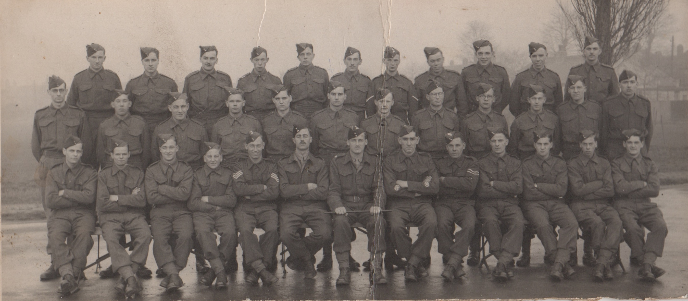

Born 19th November 1923 at home at 19 Loanda Street, Haggerston, Shorditch.
Born 19th November 1923 at home at 19 Loanda Street, Haggerston, Shorditch.
Married to Eileen on Saturday 6th February 1943 at St James's Church in Fore Street, Edmonton
Died 3rd June 2022 in Victoria Grand Care Home, Worthing. Photos shown at his funeral can be viewed here.
Read Jim's notes on his life. These notes cover his childhood, time spent in the Army in India and some of his jobs. Some short video interviews can also be found here.
 These are the earliest photos that we have of Jim, on his own and with his younger brother Mick. Jim must be nine or ten years old, so the photos were taken in about 1932.
These are the earliest photos that we have of Jim, on his own and with his younger brother Mick. Jim must be nine or ten years old, so the photos were taken in about 1932.
At that time it seems that a photo cost 3d or 6d if you wanted it coloured (by hand). Of course, we are talking of a time well before decimalisation, when there were 20 shillings in a pound and 12 pence (d) in a shilling.

 Moving forward a few years we have these two photos of when Jim must have been about 18. From the carnation in his button hole we guess that he was going to someone's wedding, perhaps one of his elder brothers.
Moving forward a few years we have these two photos of when Jim must have been about 18. From the carnation in his button hole we guess that he was going to someone's wedding, perhaps one of his elder brothers.
Jim was called up for National Service after he had met Eileen, but before they got married. We assume that this is this is his cohort of recruits after their basic training. Jim is in the middle.
Then on 8th August 1945 we find Jim in the Army in Mysore, India. The second photo was taken some time in 1946 and shows him as a Sergeant.
The remaining photos have no dates or locations, but the the one on the right shows four Sergeants.


During the Second World War everyone had a registration card. This is the front and inside of Jim's. The first stamp is dated 23rd April 1947. This was after Jim was discharged from the Army. Eileen had moved to 36 Clarendon Road in 1946, then they went to Alpha Road (Eileen's parents house) in 1976 and then to 43 Stockton Road in 1949.
In December 2017 Jim moved from Sompting into Victoria Grand in West Worthing. After staying their for three weeks during November, while Angela and David were visiting his Granddaughter in California, he decided that he had been lonely living on his own.
 In November 2018, on the 19th to be precise, Jim reached the age of 95. This photo was taken in the small conservatory at Victoria Grand, after we had eaten some cake. His neighbour from the top floor, Connie, joined us.
In November 2018, on the 19th to be precise, Jim reached the age of 95. This photo was taken in the small conservatory at Victoria Grand, after we had eaten some cake. His neighbour from the top floor, Connie, joined us.